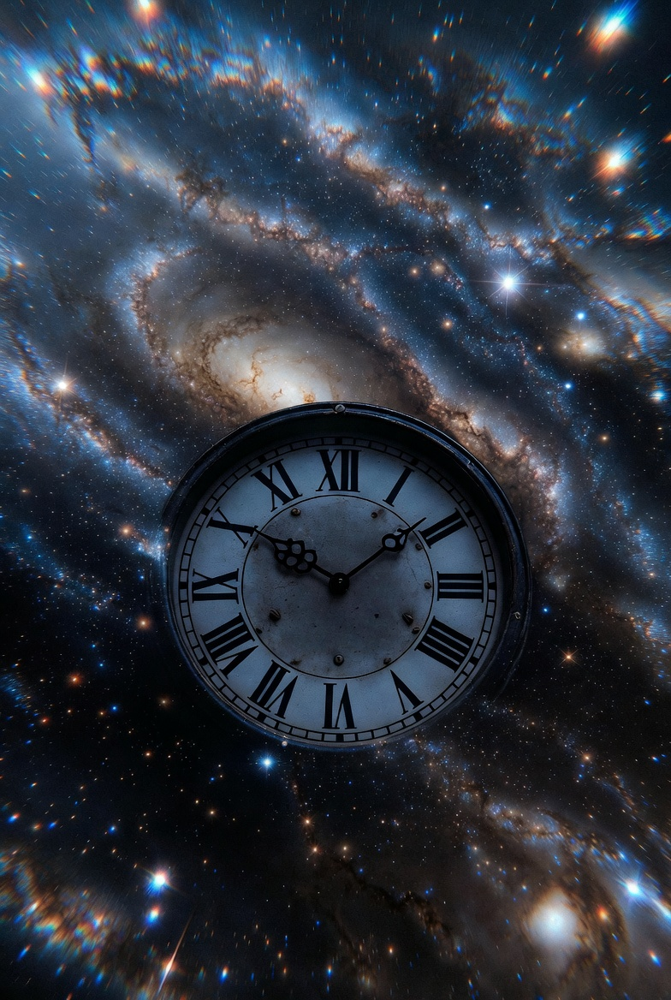

Time — The Divine Force That Creates, Sustains, and Destroys All Things
In most cultures, time is seen as a neutral measurement — seconds, minutes, hours. But in Hindu philosophy, Kala (Time) is a divine, living force. It is not something that happens to us — it is something that is us.
Time is personified as the great destroyer, the ultimate truth, and even as a form of the Divine itself. In the Bhagavad Gita, Krishna declares: "I am Time, the great destroyer of the world."

Kala — The Divine Force of Time
Hindu cosmology divides time into four great ages that repeat in an eternal cycle:
Einstein proved that time is not absolute — it changes depending on speed and gravity. This aligns perfectly with the Hindu view that time is relative and cyclical, not linear.
Physics shows that the universe is moving toward greater disorder (entropy). This mirrors the Hindu concept that we are in Kali Yuga — an age of increasing chaos before the next cycle begins.
Modern theories like the "Big Bounce" and cyclical universe models suggest the universe expands and contracts in endless cycles — exactly what Hindu cosmology described thousands of years ago with the Yugas and Kalpas.
Accept Impermanence
Everything you love will eventually pass. This is not sad — it is the truth that makes life precious. Practice gratitude for what is here now.
Live in the Eternal Now
Past and future only exist in the mind. The only real time is this moment. Kala teaches us to stop living in memories or worries.
Trust the Cycle
Even in the darkest Kali Yuga, the next golden age is already being born. Your personal dark times are also the soil for your next golden age.
Time is not your enemy.
Time is your teacher — the ultimate reminder that nothing lasts, so love deeply while you can.
"I am Time, the great destroyer of the world."
When you make peace with Kala, you become free.